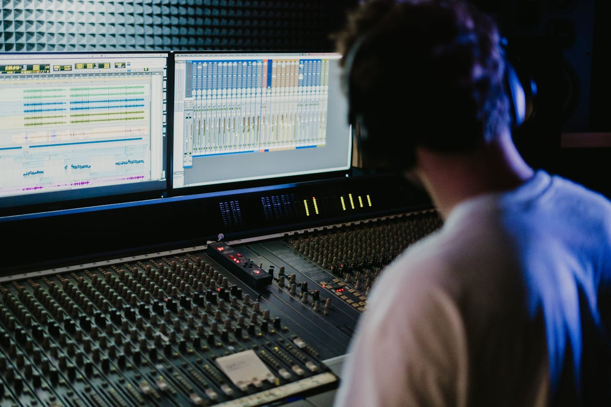

Kreativität entfesseln: Von der Idee zum Song
Die Entstehung eines Songs von Grund auf ist eine faszinierende Reise, die im Aufnahmestudio in der Schweiz eine besonders inspirierende Form annimmt. Alles beginnt mit einer Idee – sei es eine Melodie, ein Textfragment oder eine emotionale Inspiration. Im Studio haben Künstler die Möglichkeit, diese anfängliche Inspiration zu erfassen und zu entwickeln.
Ein wesentlicher Schritt bei der Songproduktion ist die Vorproduktion. Hier kommen die kreativen Prozesse in Gang: Ideen werden ausgetauscht, Arrangements skizziert und erste Demo-Versionen aufgenommen. Dieser Prozess ist entscheidend, um die Grundlage für den Song zu schaffen und sicherzustellen, dass die musikalische Vision klar definiert ist, bevor es zur eigentlichen Aufnahme geht.
Die Atmosphäre im Aufnahmestudio spielt eine entscheidende Rolle. In der Schweiz bieten Studios nicht nur technische Möglichkeiten, sondern auch eine Umgebung, die Kreativität fördert. Die Akustik der Räume, die Ausstattung mit hochwertiger Aufnahmetechnik und die Expertise der Toningenieure tragen dazu bei, dass jeder musikalische Moment eingefangen und perfektioniert werden kann. Sobald die Vorproduktion abgeschlossen ist, beginnt die eigentliche Aufnahme. Hier geht es darum, die musikalischen Ideen in professionellen Tracks umzusetzen. Künstler arbeiten eng mit Toningenieuren zusammen, um sicherzustellen, dass jeder Ton, jeder Beat und jede Nuance des Gesangs perfekt eingefangen wird. Die Aufnahmesitzungen sind oft intensiv und erfordern Präzision, um die gewünschte Atmosphäre und Emotionen zu vermitteln. Nach den Aufnahmen folgt die Phase des Arrangierens und Mischens. In der Schweiz stehen Studios für Misch- und Mastering-Services zur Verfügung, die es ermöglichen, die einzelnen Spuren eines Songs zu optimieren und zu einem harmonischen Gesamtklang zu verschmelzen. Dies ist eine technische Kunst, die den Sound eines Songs entscheidend prägt und dafür sorgt, dass er auf allen Wiedergabegeräten optimal zur Geltung kommt. Die letzte Etappe ist das Mastering. Hier wird der finalisierte Mix feinabgestimmt und für die Veröffentlichung vorbereitet. Das Mastering ist wichtig, um sicherzustellen, dass die Lautstärke, Dynamik und Klangbalance eines Songs den professionellen Standards entsprechen und ihn bereit machen für Radio, Streaming und andere Veröffentlichungsplattformen. Die gesamte Reise der Songproduktion von Grund auf im Aufnahmestudio in der Schweiz ist geprägt von Zusammenarbeit, Kreativität und handwerklicher Präzision. Jeder Schritt – von der ersten Idee über die Aufnahme bis hin zum fertigen Master – trägt dazu bei, dass ein Song seine volle künstlerische Wirkung entfalten kann.
Die Rolle des Aufnahmestudios: Technik, Expertise und Unterstützung
Ein Aufnahmestudio ist mehr als nur ein Ort, an dem Musik aufgenommen wird. Es ist ein kreativer Raum, der Künstlern die Möglichkeit bietet, ihre Visionen zu verwirklichen und ihre Musik auf professionellem Niveau zu produzieren. In der Schweiz bieten Aufnahmestudios eine Vielzahl von Dienstleistungen und Ressourcen, die diesen Prozess unterstützen. Die technische Ausstattung eines Aufnahmestudios ist von entscheidender Bedeutung für die Qualität der Aufnahmen. Moderne Studios in der Schweiz investieren in erstklassige Aufnahmetechnik, die es ermöglicht, jede musikalische Nuance präzise einzufangen. Von Mikrofonen über Mischpulte bis hin zu digitalen Aufnahme- und Bearbeitungssystemen – die Technologie spielt eine zentrale Rolle bei der Schaffung eines professionellen Klangbildes.
Darüber hinaus bieten Aufnahmestudios in der Schweiz Zugang zu erfahrenen Toningenieuren und Musikproduzenten. Diese Experten bringen nicht nur technisches Know-how, sondern auch künstlerische Sensibilität mit. Sie verstehen die Herausforderungen und Möglichkeiten der Songproduktion und arbeiten eng mit Künstlern zusammen, um deren kreative Visionen zu realisieren. Ein weiterer wichtiger Aspekt ist die akustische Gestaltung der Aufnahmeräume. Die Akustik beeinflusst maßgeblich den Klang eines Songs und die Qualität der Aufnahmen. Professionelle Aufnahmestudios in der Schweiz investieren in akustische Optimierungen, um Reflexionen zu minimieren und eine neutrale Klangumgebung zu schaffen, die für präzise Aufnahmen und Abhören entscheidend ist. Neben der reinen technischen Unterstützung bieten Aufnahmestudios auch eine kreative Umgebung, die Inspiration fördert. Die Atmosphäre eines Studios kann einen erheblichen Einfluss auf die künstlerische Leistung haben. Viele Künstler schätzen die Ruhe und Konzentration, die ein professionelles Studio bietet, sowie die Möglichkeit, sich ganz auf ihre Musik zu konzentrieren, ohne Ablenkungen. Zusammengefasst ist ein Aufnahmestudio in der Schweiz ein zentraler Ort für die Songproduktion von Grund auf. Es vereint technische Exzellenz, kreative Unterstützung und eine inspirierende Atmosphäre, um Künstlern zu helfen, ihre musikalischen Ideen in voller Pracht zu verwirklichen. Jeder Song ist das Ergebnis einer intensiven Zusammenarbeit zwischen Künstlern, Toningenieuren und Produzenten – ein Beweis für die Magie der Musik und die Möglichkeiten, die ein professionelles Studio bietet.